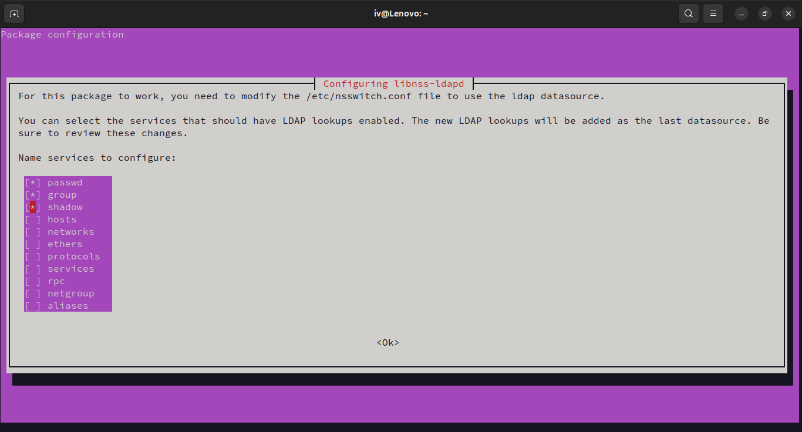
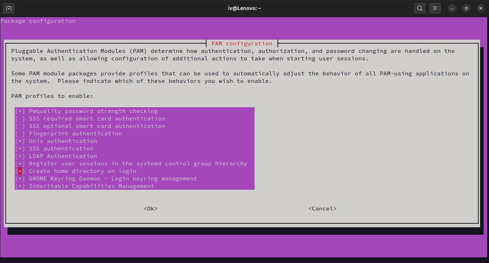

Installation
Proxmox and LDAP Base Installation
Follow the base installation guide for the following before proceeding:
Configuring LTSP server to use LDAP
Since all of our VMs will mount the home directory from the LTSP server, we need to configure the LTSP server to authenticate users from the LDAP server. Run the following commands to install and configure LDAP client on the LTSP server:
sudo apt install libpam-ldapd
- passwd
- group
- shadow

Warning
Make sure to select the correct options, as selecting the wrong options can cause the server to not authenticate against the LDAP server.
Now for the final step, we can configure the VM to create a home directory for the user if it doesn't exist. Run the following command:
sudo pam-auth-update

Note
Without this option, the server will not create a home directory for the user if it doesn't exist and the user will get dropped to / when they log in.
LDAP Configuration for Guacamole
Once LDAP is set up, you need to add a custom schema to store virtual machine information, which Guacamole will use to locate available VMs.
-
Head over to the Apache Guacamole downloads page and find the
guacamole-auth-ldap-x.x.x.tar.gzfile. The latest version is1.5.5at the time of writing, but download the most recent version available. -
Extract the tarball. Inside the
schemafolder, you'll find a file namedguacConfigGroup.ldif. -
Apply this schema to your LDAP instance with the following command:
ldapadd -Q -Y EXTERNAL -H ldapi:/// -f schema/guacConfigGroup.ldifYou may be prompted to enter the LDAP admin password. Upon success, you should see an output like this:
adding new entry "cn=guacConfigGroup,cn=schema,cn=config"
Now that the schema is in place, you're ready to begin adding virtual machines to LDAP. You can do this either manually using LDIF files or via the Apache Directory Studio. This will be covered in the Management section.
Installing Guacamole
To deploy Guacamole using Docker, you first need to prepare the necessary database tables.
Setting Up Database Tables
Run the following command to launch a temporary Guacamole container that generates SQL scripts for table creation:
docker run --rm guacamole/guacamole /opt/guacamole/bin/initdb.sh --postgresql > initdb.sql
Docker Compose Setup for Guacamole
-
Create a
compose.ymlfile for the deployment. Start by defining the PostgreSQL database service:services: db: container_name: guacamoledb image: postgres:alpine restart: unless-stopped logging: driver: "local" environment: POSTGRES_PASSWORD: 'dontusethispassword' POSTGRES_USER: 'guacuser' volumes: - pgdata:/var/lib/postgresql/data volumes: pgdata: -
Replace the placeholder password with a secure one, then save the file in a folder and run:
docker compose up -dThis will start the PostgreSQL container.
-
Copy the generated
initdb.sqlfile to the PostgreSQL container:docker cp initdb.sql guacamoledb:/initdb.sql -
Execute the SQL script inside the container to set up the necessary database tables:
docker exec guacamoledb psql -U guacuser -f /initdb.sql
Make sure the container name and username match those defined in your compose.yml file.
Completing the Guacamole Setup
Stop the currently running database container to add the rest of the configuration:
docker compose down
compose.yml file:
guacd:
container_name: guacd
image: guacamole/guacd
restart: unless-stopped
logging:
driver: "local"
guacamole:
container_name: guacamole
image: guacamole/guacamole
restart: unless-stopped
logging:
driver: "local"
ports:
- 8080:8080
volumes:
- ./guacamole-home:/guacamole-home
environment:
# Set Apache Tomcat to use / as the Guacamole web context
WEBAPP_CONTEXT: "ROOT"
# Directory for custom extensions, duplicated to the container home
GUACAMOLE_HOME: "/guacamole-home"
GUACD_HOSTNAME: "guacd"
POSTGRESQL_HOSTNAME: "guacamoledb"
POSTGRESQL_DATABASE: "guacuser"
POSTGRESQL_USER: "guacuser"
POSTGRESQL_PASSWORD: "dontusethispassword"
POSTGRESQL_AUTO_CREATE_ACCOUNTS: "true"
# LDAP configuration (adjust to match your setup)
LDAP_HOSTNAME: "191.168.111.222"
LDAP_PORT: 389
LDAP_USER_BASE_DN: "ou=people,dc=example,dc=com" # Users available for login
LDAP_CONFIG_BASE_DN: "ou=groups,dc=example,dc=com" # Virtual machines available for use
# Enable 2FA (if desired)
# TOTP_ENABLED: "true"
depends_on:
- guacdb
- guacd
compose.yml file should resemble the following:
services:
db:
container_name: guacamoledb
image: postgres:alpine
restart: unless-stopped
logging:
driver: "local"
environment:
POSTGRES_PASSWORD: 'dontusethispassword'
POSTGRES_USER: 'guacuser'
volumes:
- pgdata:/var/lib/postgresql/data
guacd:
container_name: guacd
image: guacamole/guacd
restart: unless-stopped
logging:
driver: "local"
guacamole:
container_name: guacamole
image: guacamole/guacamole
restart: unless-stopped
logging:
driver: "local"
ports:
- 8090:8080
volumes:
- ./guacamole-home:/guacamole-home
environment:
WEBAPP_CONTEXT: "ROOT"
GUACAMOLE_HOME: "/guacamole-home"
GUACD_HOSTNAME: "guacd"
POSTGRESQL_HOSTNAME: "guacamoledb"
POSTGRESQL_DATABASE: "guacuser"
POSTGRESQL_USER: "guacuser"
POSTGRESQL_PASSWORD: "dontusethispassword"
POSTGRESQL_AUTO_CREATE_ACCOUNTS: "true"
LDAP_HOSTNAME: "191.168.111.222"
LDAP_PORT: 389
LDAP_USER_BASE_DN: "ou=people,dc=example,dc=com"
LDAP_CONFIG_BASE_DN: "ou=groups,dc=example,dc=com"
depends_on:
- guacdb
- guacd
volumes:
pgdata:
docker compose up -d
http://your-server-ip:8080. If you have a domain name, you can set up a reverse proxy to point to the Guacamole service.
Next Steps
Head over to Configuration to finalize some more configurations before we can use the system